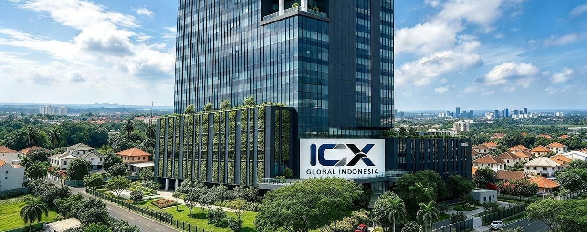
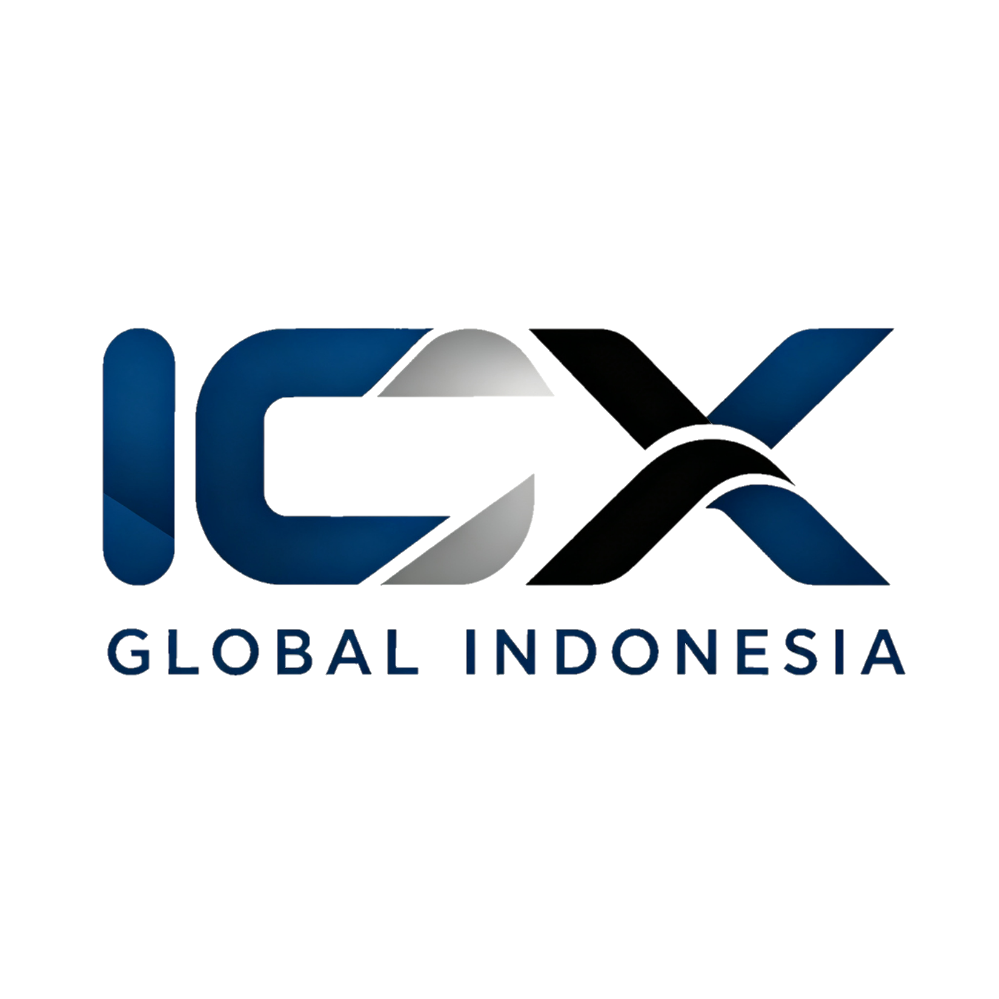
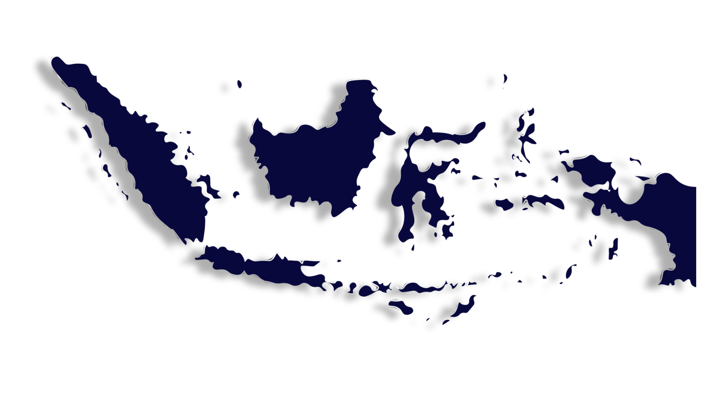
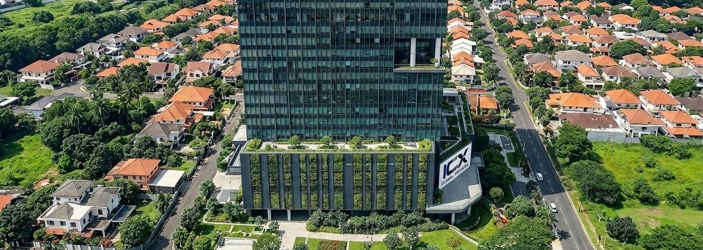
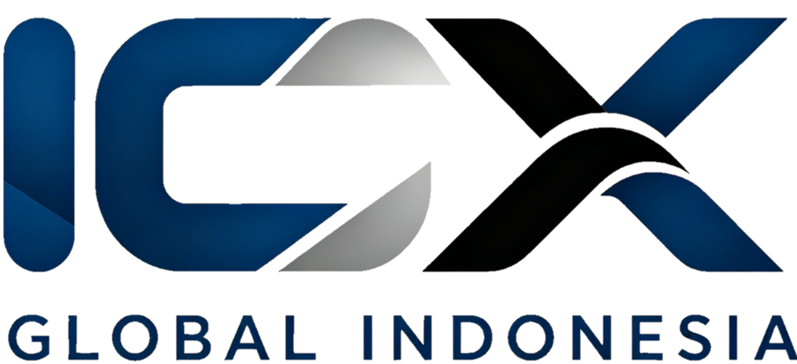
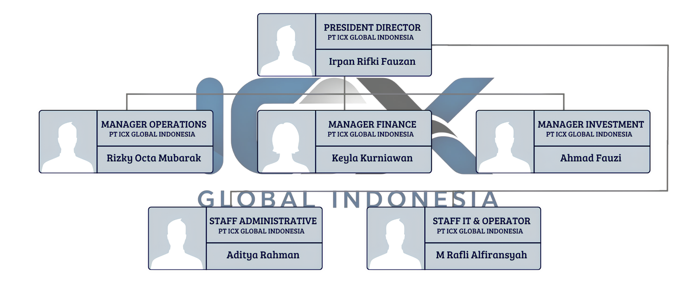
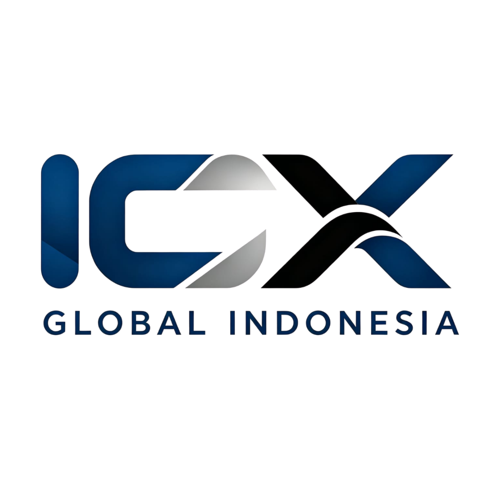

Hari
Jam
Menit
Detik
Selamat datang di PT ICX GLOBAL INDONESIA - Investasi & Pengembangan Modal - Berfokus pada Pasar Saham Indonesia - Didorong oleh Integritas, Profesionalisme, Disiplin, Keberlanjutan, dan Pengembangan Strategis - Mengelola Modal Internal dengan Pendekatan yang Terukur dan Bertanggung Jawab - Membangun Nilai Melalui Strategi dan Pertumbuhan yang Berkelanjutan.

PT ICX GLOBAL INDONESIA merupakan perusahaan yang berfokus pada investasi, penanaman modal, pengelolaan modal, dan pengembangan aset perusahaan. Perusahaan didirikan dengan visi untuk membangun fondasi bisnis yang profesional, disiplin, dan berkelanjutan melalui pengelolaan modal internal serta strategi yang terukur. Sejak awal, ICX GLOBAL INDONESIA diarahkan untuk berkembang secara bertahap dengan mengutamakan integritas, profesionalisme, pengelolaan risiko, dan penciptaan nilai jangka panjang.
Menjadi perusahaan investasi yang profesional, disiplin, berkelanjutan, dan adaptif dalam mengembangkan aset serta menciptakan nilai perusahaan melalui pengelolaan modal dan strategi yang terukur.

Mengembangkan aset perusahaan melalui pengelolaan modal yang profesional, disiplin, dan bertanggung jawab.
Menjalankan kegiatan investasi dan penanaman modal berdasarkan data, analisis, strategi, serta pengelolaan risiko yang terukur.
Membangun tata kelola dan budaya kerja yang berlandaskan integritas, profesionalisme, disiplin, dan tanggung jawab.
Mengembangkan strategi, sistem, dan kemampuan perusahaan secara berkelanjutan untuk pertumbuhan aset dan nilai perusahaan jangka panjang.
PT ICX GLOBAL INDONESIA berpegang pada integritas, profesionalisme, disiplin, dan inovasi. Kami menjaga kepercayaan mitra melalui transparansi, akuntabilitas, dan komitmen terhadap hasil terbaik. Setiap langkah kami didasari pada prinsip pengelolaan sumber daya yang bertanggung jawab, efisien, dan berkelanjutan. Kami juga mengutamakan keselamatan, kesehatan, dan kesejahteraan dalam setiap operasi, serta membangun hubungan yang saling percaya, kolaboratif, dan berkelanjutan dengan seluruh pemangku kepentingan.
PT ICX GLOBAL INDONESIA berpegang pada integritas, profesionalisme, disiplin, dan inovasi. Kami menjaga kepercayaan mitra melalui transparansi, akuntabilitas, dan komitmen terhadap hasil terbaik. Setiap langkah kami didasari pada prinsip pengelolaan sumber daya yang bertanggung jawab, efisien, dan berkelanjutan. Kami juga mengutamakan keselamatan, kesehatan, dan kesejahteraan dalam setiap operasi, serta membangun hubungan yang saling percaya, kolaboratif, dan berkelanjutan dengan seluruh pemangku kepentingan.


PT ICX GLOBAL INDONESIA berkomitmen untuk terus mengembangkan aset dan perusahaan melalui pengelolaan modal internal yang terarah, strategi tepat, disiplin, integritas, dan profesionalisme. Kami berorientasi pada pertumbuhan serta penciptaan nilai perusahaan secara berkelanjutan. Terima kasih telah mempercayai PT ICX GLOBAL INDONESIA. Kami terus melangkah menjadi perusahaan yang profesional, adaptif, dan berorientasi pada pertumbuhan jangka panjang.

Jln. Raya Batujaya, Desa Karyamulya, Kec. Batujaya, Kab. Karawang, Provinsi Jawa Barat, Indonesia.